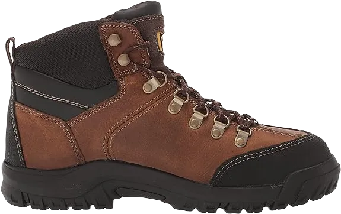

5 Best Oil Field Work Boots 2024
The premium quality of these boots is attributed to their 100%
cowhide construction. However, it's important to note that you may
need to condition them weekly, depending on moisture exposure.
Cowhide is well-known for its comfort and durability, making it a
popular choice. The superior leather craftsmanship also contributes
to the boots' waterproof nature, ensuring your feet stay dry no
matter the conditions.
Your feet are further protected by a sturdy metal plate at the toe
of the boot. This plate is robust enough to guard against injuries
while remaining lightweight, so you won’t feel weighed down as you
walk.
-
#1
Georgia Boot Athens Mock Wellington Boot
.webp)
For another exceptional pair of leather work boots, consider the Georgia Boot Athens Mock Wellington Boot. As part of the Athens series, these boots feature a waterproof cowhide upper along with a leather panel and a mock-toe design. They are specifically designed as work boots, equipped with a steel toe for safety and protection against electrical hazards.
The Georgia Waterproof Work Boots technology ensures that your feet remain dry while still allowing breathability. This feature permits air to circulate while keeping water and dirt out.
Additionally, these boots are designed with pull-on straps on the sides, making it easy to put them on and take them off as needed. -
#2
Wolverine men’s Buccaneer Paintings Boot
.webp)
Leather is an excellent choice for crafting work boots. Not only is it aesthetically pleasing, but it is also highly durable and effective at keeping water out. This is why many work boots, including the Wolverine Men's Buccaneer Work Boots, are made from leather.
The uppers are constructed from 100% full-grain leather, ensuring that your feet remain dry and protected from moisture. The engineered sole is designed with a tread pattern that provides stability, even on wet surfaces.
The mesh lining facilitates moisture wicking, helping to keep your feet dry while preventing water from entering the boot. Additionally, the cross-section lining enhances the waterproofing capabilities of these boots. -
#3
Earhart men’s power industrial Boot
Earhart is a company known for its reliable and durable outdoor gear, including hiking boots and apparel. We were initially skeptical about whether their industrial work boots could meet the same high standards, but we were pleasantly surprised to find that they do.
The upper is crafted from leather and rubber, making these boots both stylish and waterproof. The high-top design provides a comfortable and sturdy feel while wearing these work boots. The Ax Suede top cover material constitutes 30% of the shoe’s support, helping to reduce fatigue and prevent foot slipping.
The multiple layers of foam offer a unique wearing experience, enhancing comfort over extended periods. They improve the pressure distribution and rebound characteristics of the boots, allowing you to wear them for longer without discomfort. -
#4
At any point Boots
Do these boots really keep your feet as “exceptionally dry” as they claim? With the gusseted tongue, we were curious if water could actually seep in past the tongue and soak your socks.
Fortunately, the Ever Boots work boots do indeed help keep your feet dry. The suede leather upper is absorbent, and since suede is a relatively grippy material, it prevents water from pooling against the fabric. Instead, water runs off the surface of the boots, keeping it from penetrating the leather upper.
The quick hooks and back loop make it easy to put these boots on quickly and efficiently—no more fumbling with the collar as you pull them on. Designed for hiking, these boots are lightweight and incredibly comfortable for all-day wear, making them an excellent choice for use on an oil rig. -
#5
Danner men’s high-high excellent Rain wooded
.webp)
Danner's Men's Rain Forest Work Boots are crafted from 100% full-grain leather uppers. Featuring a GORE-TEX liner, these boots are completely breathable and comfortable to wear.
Manufactured in the United States, this aspect is important to some dedicated customers while being less significant to others. The hand-crafted construction ensures that these boots offer maximum stability and longevity, providing enhanced strength with each step you take. The upper will remain securely attached to the sole for many years, even after enduring the rigors of working on an oil rig.
The 200G Thinsulate insulation keeps these boots lightweight while still providing protection, making them ideal for those working in colder oil field environments. Standing at 8 inches tall from the arch, they offer ample support and comfort up to your ankles and part of your calves.